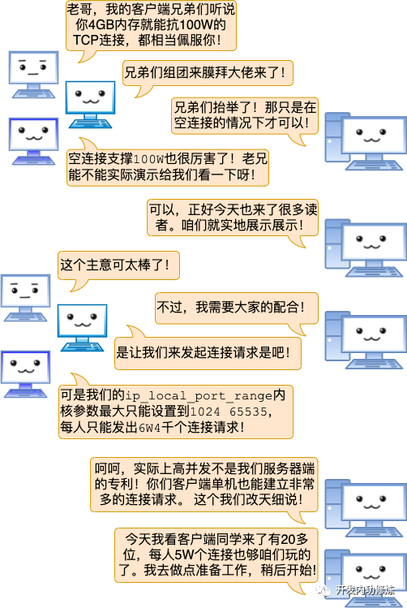
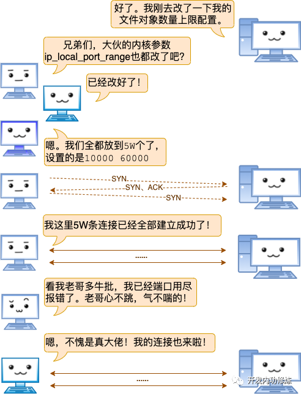
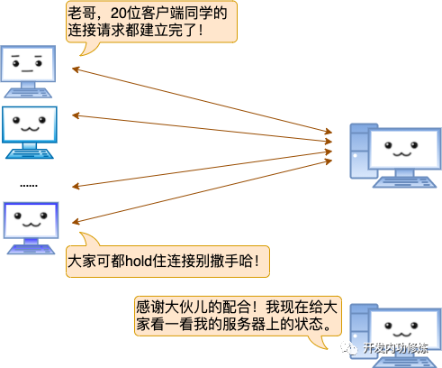
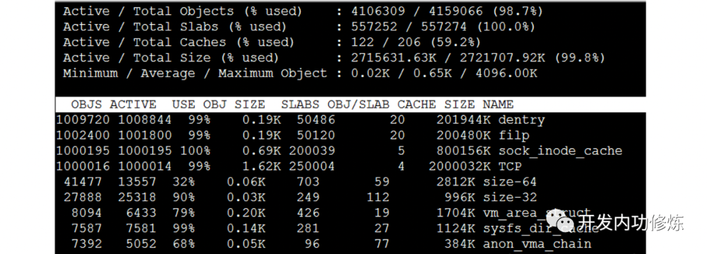
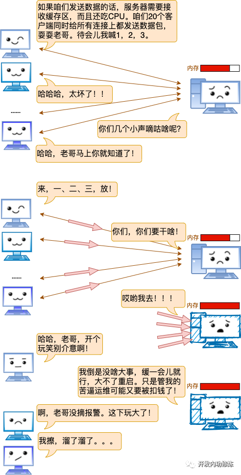

漫画 | 一台Linux服务器最多能支撑多少个TCP连接？
编者荐语：
这篇文章作者用通俗易懂的语言，图文并茂的为大家深入讲解了一台Linux服务器究竟能支撑多少个TCP，相信绝大多数读者对这个概念都或多或少有一定了解，但这篇文章会深入细节的每一个本质，非常值得大家一读。
困惑很多人的并发问题
在网络开发中，我发现有很多同学对一个基础问题始终是没有彻底搞明白。那就是一台服务器最大究竟能支持多少个网络连接？我想我有必要单独发一篇文章来好好说一下这个问题。
很多同学看到这个问题的第一反应是65535。原因是：“听说端口号最多有65535个，那长连接就最多保持65535个了”。是这样的吗？还有的人说：“应该受TCP连接里四元组的空间大小限制，算起来是200多万亿个！”
如果你对这个问题也是理解的不够彻底，那么今天讲个故事讲给你听！
一次关于服务器端并发的聊天
“TCP连接四元组是源IP地址、源端口、目的IP地址和目的端口。任意一个元素发生了改变，那么就代表的是一条完全不同的连接了。拿我的Nginx举例，它的端口是固定使用80。另外我的IP也是固定的，这样目的IP地址、目的端口都是固定的。剩下源IP地址、源端口是可变的。所以理论上我的Nginx上最多可以建立2的32次方（ip数）×2的16次方（port数）个连接。这是两百多万亿的一个大数字！！”
“进程每打开一个文件（linux下一切皆文件，包括socket），都会消耗一定的内存资源。如果有不怀好心的人启动一个进程来无限的创建和打开新的文件，会让服务器崩溃。所以linux系统出于安全角度的考虑，在多个位置都限制了可打开的文件描述符的数量，包括系统级、用户级、进程级。这三个限制的含义和修改方式如下：”
- 系统级：当前系统可打开的最大数量，通过fs.file-max参数可修改
- 用户级：指定用户可打开的最大数量，修改/etc/security/limits.conf
- 进程级：单个进程可打开的最大数量，通过fs.nr_open参数可修改
“我的接收缓存区大小是可以配置的，通过sysctl命令就可以查看。”
1 | $ sysctl -a | grep rmem |
“其中在tcp_rmem”中的第一个值是为你们的TCP连接所需分配的最少字节数。该值默认是4K，最大的话8MB之多。也就是说你们有数据发送的时候我需要至少为对应的socket再分配4K内存，甚至可能更大。”
“TCP分配发送缓存区的大小受参数net.ipv4.tcp_wmem配置影响。”
1 | $ sysctl -a | grep wmem |
“在net.ipv4.tcp_wmem”中的第一个值是发送缓存区的最小值，默认也是4K。当然了如果数据很大的话，该缓存区实际分配的也会比默认值大。”
服务端百万连接达成记

“准备啥呢，还记得前面说过Linux对最大文件对象数量有限制，所以要想完成这个实验，得在用户级、系统级、进程级等位置把这个上限加大。我们实验目的是100W，这里都设置成110W，这个很重要！因为得保证做实验的时候其它基础命令例如ps，vi等是可用的。“


活动连接数量确实达到了100W：
1 | $ ss -n | grep ESTAB | wc -l |
当前机器内存总共是3.9GB，其中内核Slab占用了3.2GB之多。MemFree和Buffers加起来也只剩下100多MB了：
1 | $ cat /proc/meminfo |
通过slabtop命令可以查看到densty、flip、sock_inode_cache、TCP四个内核对象都分别有100W个：


结语
互联网后端的业务特点之一就是高并发. 但是一台服务器最大究竟能支持多少个TCP连接，这个问题似乎却又在困惑着很多同学。希望今天过后，你能够将这个问题踩在脚下摩擦！
学习是一件痛苦的事情，尤其咱们号里很多读者朋友都是工作满一天了再来看我的技术号的文章的。我一直都在琢磨到底怎么样组织技术内容形式，能让大家理解起来更能省一点脑细胞呢。这篇服务器的最大并发数的文章是早就想发的，但是写了两三个版本都不满意。今天终于想出了一种让大家更容易理解的方式，算过了自己这关了。
如果您喜欢我的文章、并觉得它有用，期望您能不吝把它转发到你的朋友圈，技术群。或者哪怕是点个赞，点个再看都可以。触达更多的技术同学并收获大家的反馈将极大地提升彦飞的创作动力！